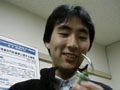

顧問・OB紹介
世界に貢献する仙台電波高専科学部の顧問の先生 ・先輩方を紹介
顧問
OB
大泉 哲哉(Tetsuya O-izumi)
役職：第一顧問
本人より：
熊谷 和志(Kazushi Kumagai)
役職：第二顧問,青葉部屋親方
本人より：
熊谷研究室のページへ
鈴木 哲(Tetsu Suzuki)
役職：第三顧問
本人より：
落合 幸喜(Kouki Ochiai)
本人より：
落合氏のページへ
田中 勉(Tutomu Tanaka)
本人より：
中村 寛行(Yoshiyuki Nakamura)
本人より：

宮本 毅祥(Takayoshi Miyamoto)
本人より：
松本 英樹(Hideki Matsumoto)
本人より：
佐々木 拓実(Takumi Sasaki)
本人より：
佐野 正憲(Masanori Sano)
本人より：
Back
Home